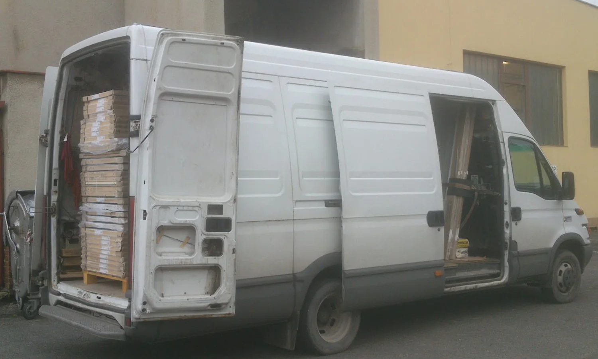
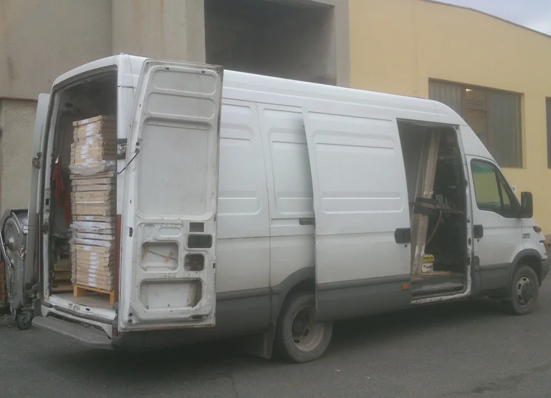

Stěhování bytů a domů
Skříně, postele, pohovky, stoly, židle, spotřebiče i běžné vybavení domácnosti.
- demontáž a montáž nábytku
- obalení proti poškození
- přistavení dodávky dle dohody
Rychlé stěhování bytů, domů, kanceláří a vyklízení prostor. Přijedeme dodávkou, pomůžeme s balením, demontáží nábytku i odvozem.

Od menšího převozu nábytku až po kompletní stěhování domácnosti nebo vyklizení bytu. Každou akci předem naplánujeme podle rozsahu a časové náročnosti.
Skříně, postele, pohovky, stoly, židle, spotřebiče i běžné vybavení domácnosti.
Vyklízení bytů, domů, zahrad, sklepů, kanceláří, pozemků a dalších prostor.
Přeprava nábytku, materiálu a zásilek po Teplicích, Ústeckém kraji, ČR i EU.
Před stěhováním domluvíme rozsah práce, co bude nutné rozebrat, co zabalit a jak dlouho může akce trvat. Podle toho stanovíme předběžnou cenu.
Stěhování jsme často schopni realizovat ještě dnes nebo zítra. Zavolejte a domluvíme konkrétní možnosti.
Pro stěhování a autodopravu používáme dodávkový vůz vhodný pro převoz nábytku, krabic a vybavení domácnosti.

Provádíme stěhování pro Teplice, Krupku, Ústí nad Labem, Litoměřice, Děčín a okolí. Po dohodě stěhujeme po celé ČR i do EU.
Nejrychlejší je zavolat. Podle rozsahu stěhování domluvíme termín, přistavení dodávky, počet pracovníků, balení, demontáž nábytku a orientační cenu.
Ano, služby nabízíme non stop. Za svátky neúčtujeme příplatek.
Ne, za patra nejsou účtované žádné příplatky. Celková cena se řeší podle rozsahu a časové náročnosti.
Ano, nabízíme balení do kartonových krabic, obalování fólií a ochranu křehkých nebo cenných předmětů.